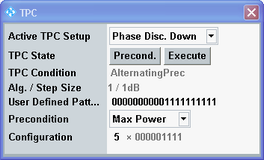
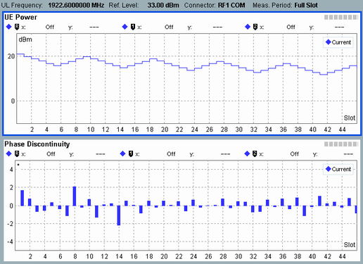
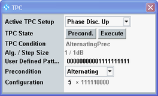

For a phase discontinuity measurement, you need to configure the signaling application, set up a circuit switched RMC connection and configure the measurement. Then you start the TPC pattern execution and the measurement. The required steps are described in detail below.
Proceed as follows:
Set up an RMC connection. The application sheet "WCDMA Combined Signal Path Measurements" describes the general procedure for connection setup, see "Setting Up a Connection".
Switch to the WCDMA multi-evaluation measurement:
In the signaling application, press the "WCDMA TX Meas" softkey.
The measurement application is opened and the combined signal path scenario is selected automatically.
If necessary, select the "Multi Evaluation" tab.
Press the "Trigger" softkey followed by the "Trigger Source" hotkey. Select "WCDMA Sig... TPC Trigger", i.e. the TPC trigger signal provided by the WCDMA signaling application.
Configure the overview to show only the "UE Power" and "Phase Discontinuity" measurements:
Press the "Multi Evaluation" softkey followed by the "Assign Views" hotkey.
Press "Off" to disable all measurements. Then enable the "UE Power" and "Phase Discontinuity" measurements.
Press the "Display" softkey followed by the "Select View" hotkey.
Select the overview.
Configure the measurement so that it measures only one measurement interval:
Press the "Multi Evaluation" softkey followed by the "Statistic Count" hotkey.
Set the statistic count for "Modulation" measurements to 1.
In this example, only "UE Power" and "Phase Discontinuity" are active. If also a spectrum or BER measurement is active, set the corresponding values also to 1.
Press the "Repetition" hotkey . Select "Single Shot".
Note: This step is required because only one trigger pulse is generated by the signaling application. Thus a statistic count > 1 or a continuous measurement would result in a trigger timeout for the second measurement interval.
Press the "Measurement Length" hotkey . Enter 46 to configure the measurement length compatible to the sent TPC patterns.
Note: The measurement length has to be bigger than the number of sent TPC bits, so that you see the phase discontinuity for all power steps. In this example 5 TPC patterns with 9 TPC bits each are sent, resulting in 45 TPC bits. For the maximum of 13 TPC patterns, a measurement length of 120 slots is recommended.
Press "ON | OFF" to start the measurement.
A trigger timeout is indicated, because there is not yet a TPC trigger signal.
Configure the power control settings. Access signaling application settings from the measurement via a hotkey:
Press the "Signaling Parameter" softkey followed by the "TPC" hotkey.
Set "Active TPC Setup" to "Phase Disc. Down"
Set "Precondition" to "Max Power"
Set "Configuration" to "5 x 000001111"
This example uses 5 patterns. You can use up to 13 patterns, resulting in 117 TPC bits.

Press the "Execute" button to start the execution of the TPC pattern.
A TPC trigger pulse is generated and the 000001111 TPC patterns are sent.
The overview now displays the measurement results.

The example screenshot shows the measured UE power in the upper part. Starting with the maximum UE power of about 20 dBm, the power is reduced five times by 1 dB and then increased four times by 1 dB. These transitions correspond to one 000001111 TPC pattern. The pattern is sent five times.
In the lower part, the measured phase discontinuity is shown. Each bar is at a slot boundary.
If you use the maximum of 13 TPC patterns, the UE output power is only reduced by 13 dB within 117 timeslots. So obviously the measurement has to be performed repeatedly to cover the entire power range of a UE.
After having performed the steps described above, continue as follows:
Reconfigure the power control settings, so that the next measurement starts with the already reduced UE power:
Press the "Signaling Parameter" softkey followed by the "TPC" hotkey.
Set the precondition to "Alternating".
Press "RESTART | STOP" to restart the measurement.
A trigger timeout is indicated, because there is not yet a TPC trigger signal.
Start the execution of the TPC pattern:
Press the "Signaling Parameter" softkey followed by the "TPC" hotkey.
Press the "Execute" button.
Evaluate the measurement results.
Repeat the previous steps except step 1 until the minimum UE power.
The measurement of the reverse direction from minimum to maximum power is performed similarly. The following procedure assumes that the previous steps have been executed and the minimum power has been reached.
Continue as follows:
Press "RESTART | STOP" to restart the measurement.
A trigger timeout is indicated, because there is not yet a TPC trigger signal.
Reconfigure the power control settings:
Press the "Signaling Parameter" softkey followed by the "TPC" hotkey.
Set "Active TPC Setup" to "Phase Disc. Up"
Set "Configuration" to "5 x 111110000"
The default precondition is correct, assuming that the minimum power has already been reached.

Press the "Execute" button to start the execution of the TPC pattern.
Evaluate the measurement results.
Repeat the previous steps except step 2 until the maximum UE power.